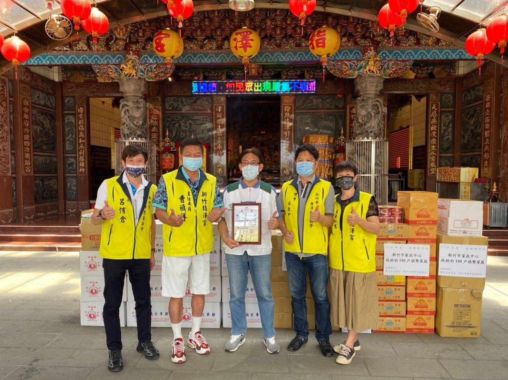

我們的信念
廣澤慈善協會以「取之社會、用之社會」為宗旨，長年深耕新竹在地，扶助中低收入戶與身心障礙家庭。我們相信，幫助不只是給予物資，更是給予尊嚴與希望。
我們的影響力

招牌善行
這是廣澤慈善協會延續十多年的年度盛事。每逢歲末，我們在指澤宮發放白米、麵條、罐頭與乾糧，嘉惠新竹、竹竹苗地區約 1,000 戶弱勢家庭。
現場更結合義剪、視力檢查、血糖篩檢、X 光肺部檢查與愛心餐點，讓受助的鄉親不只帶走物資，也帶走整個社會的溫暖。
了解我們的善行我們做的事
白米、麵條、罐頭等民生物資，定期送到最需要的家庭手中。
號召在地理髮師，為長者與弱勢提供免費剪髮，整潔有尊嚴。
視力檢查、血糖篩檢、X 光肺部檢查，守護鄉親的身體健康。
捐助學校、協助清寒學子，讓教育成為翻轉人生的力量。
攜手警方走入社區，宣導防詐知識，守護鄉親的辛苦錢。
最新消息